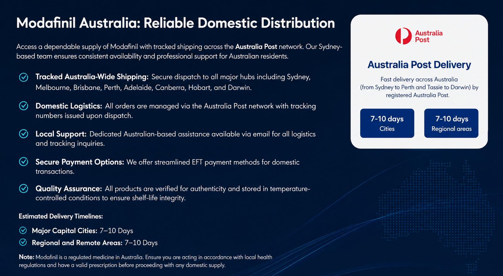
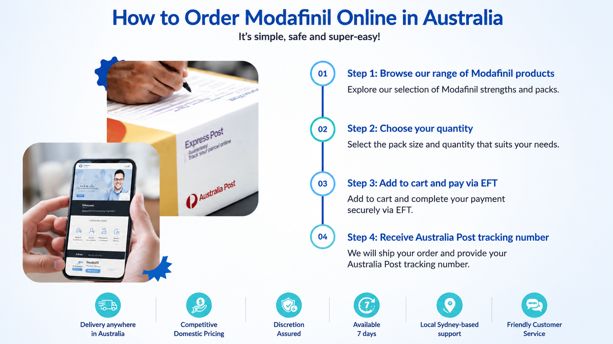

100%
Authentic
Fast & Discreet
Shipping
Australia
Wide
Products come in blister packs
Tamper-Evident Seal
Plain Unbranded Shipping
Protected Domestic Dispatch


Research indicates that Modafinil supports extended periods of wakefulness by modulating neurotransmitters associated with the sleep-wake cycle.
For individuals managing diagnosed sleep disorders, Modafinil may assist in maintaining cognitive function and focus during required periods of alertness, such as night shifts or demanding work rosters.
Modafinil is indicated for patients diagnosed with Narcolepsy, Obstructive Sleep Apnoea (OSA), and Shift Work Sleep Disorder (SWSD).
By addressing the underlying physiological causes of drowsiness, it can help mitigate the “brain fog” often associated with chronic sleep deprivation.
No more procrastination or indecision. With Modafinil, you’ll make snap decisions with the help of sharp mental clarity.
Stay sharp and productive through night shifts — ideal for FIFO rosters and fast-paced hospitality work. If you’ve been diagnosed with moderate to severe Narcolepsy, Shift Work Sleep Disorder (SWSD) and other treatments haven’t delivered, Modafinil may help you stay awake, focused, and consistent throughout your shift.
Under the Therapeutic Goods Act 1989, Modafinil is a Prescription Only (S4) medication. To ensure patient safety and compliance:
We know you’re usually ordering because you have a big week ahead, so we don’t mess around with shipping. Most metro areas like Sydney, Melbourne, and Brisbane see their package in 7–10 business days. If you’re further out in regional WA or the NT, it might take closer to 8–10 days, but you’ll have a tracking link to watch it every step of the way.
Yes. We only stock authentic, manufacturer-sealed blister packs. We’ve seen the sketchy “loose pills” sold on some international sites, and we don’t touch them. You get exactly what you see in the photos—factory-sealed and within its expiry date.
While international mail can sometimes be unpredictable, we don’t leave you hanging. Every single order is backed by our delivery guarantee. If your tracking hasn’t updated for a long period or if the package is confirmed lost, just send us a quick message. We’ll look into the logistics and make sure you either get a reshipment or a solution that works for you.
Not at all. We value your privacy as much as you do. Your order arrives in a plain, sturdy mailer with no mention of “Modafinil,” or even our business name on the outside. It looks like any other boring piece of mail, so it’s perfectly safe to have delivered to your workplace or a shared house.
We have been doing this for a long time and have refined our packaging to be as low-profile as possible. We use plain, sturdy mailers with no mention of the contents or the brand on the outside. Most orders arrive without a hitch under the TGA’s Personal Importation guidelines, but if there’s ever a rare snag at the border, our support team is ready to help you figure out the next steps.
To stay compliant with the Australian Personal Importation Scheme, we recommend keeping your order to a 3-month supply for your own personal use. This keeps things straightforward at the border and ensures your delivery is treated as a personal health import rather than a commercial one.
Under the TGA’s Personal Importation Scheme, Australians are generally allowed to import a 3-month supply of most therapeutic goods for their own use, provided they have a valid prescription from an Australian doctor. It’s a bit of a specialised process, so we always suggest checking the current TGA guidelines to ensure you’re following the rules for Schedule 4 medicines.
and all Australians looking to be at their best.